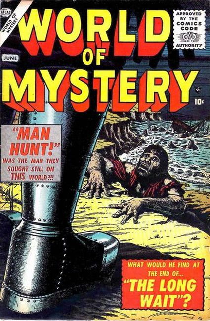

Series: 7 issues 1956
Publisher: Atlas
Issue #1 Bill Everett cover
- "The Metal Men" (art by Angelo Torres)
- "I Am Your Master"
- "Man Hunt" (art by Bob Powell)
- "When the Clock Stops"
- "The Long Wait"
- "Mission to Earth" (art by Joe Orlando)
- "The Inventor" a two-page text story